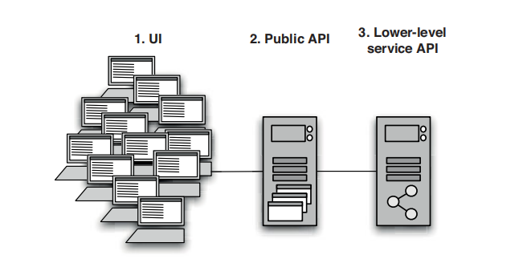
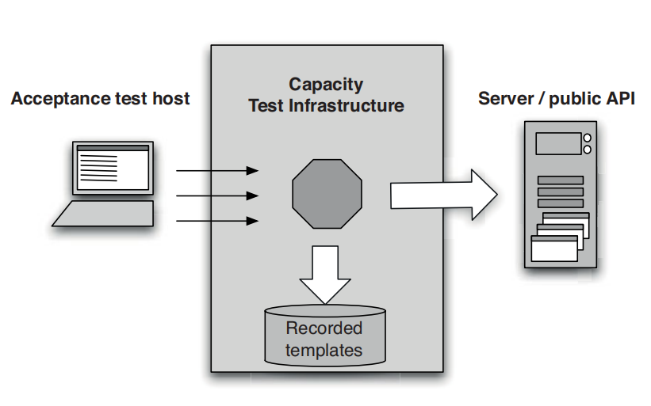

Automated Capacity Testing
Capacity Testing must have the following qualities :-
- Test specific real-world scenarios, so we don’t miss important bugs in real-world use through overly abstract testing.
- Have a predefined threshold for success, so we can tell that they have passed.
- Be of short duration, so that capacity testing can take place in a reasonable length of time.
- Be robust in the face of change, to avoid constant rework to keep up with changes to the application.
- Be composable into larger-scale complex scenarios, so that we can simulate real-world patterns of use.
- Be repeatable, capable of running sequentially and in parallel, so that we can both build suites of tests to apply load and run longevity tests.
Hence an easy approach to automating Capacity testing is to take an existing Acceptance Test Suite and making the necessary modifications to it so that the above qualities are met.
Capacity testing can take any of the following three approaches:

- Through UI - Not always a good choice, especially in large projects.
- Through a service or public API - eg making HTTP requests directly
into a web server - Can be used in applications that provide a public API other than a
graphical user interface, such as a web service, message queues, or some other
event-driven communication mechanism
- Through a lower-level API - making direct calls to a service
layer or perhaps the database - Perform a special run of the acceptance tests, or a subset of
them representing capacity test scenarios.

- Using Capacity Test Stubs to Develop Tests - The complexity of writing
the capacity test can often outweigh the complexity of writing code that is fast
enough to pass it.